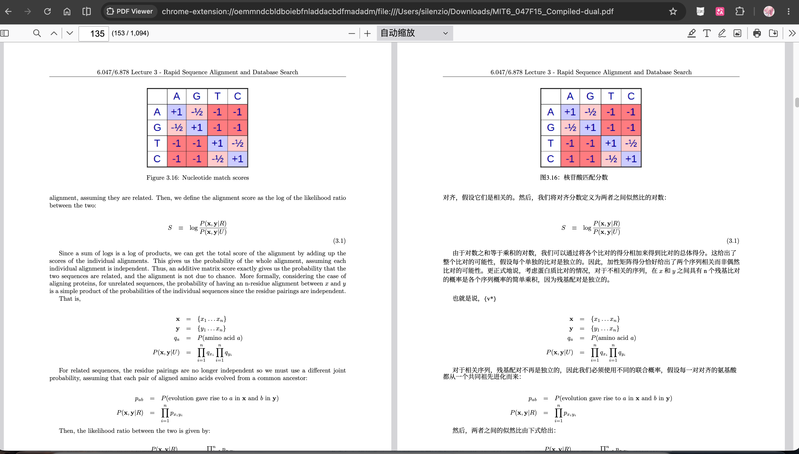

借助ai批量翻译书籍
保研结束，可算有了去处，虽然不知道以后的生活会如何，但是至少现在是终于有时间看书学习了。现在ai的能力有了很大的提高，但是让我非常焦虑的一个点是，ai的知识实在是过于渊博了，很多时候不是我去使用ai，而是ai去驱使我去干活儿。那么如果能够提高一点自身的知识的水平，或许能更好地使用ai。因此看书学习势在必行。
本人的英文水平实在糟糕，看纯英文的教材根本看不懂。很多书的中文翻译版也很难找到（表扬机械工业出版社，此社的书籍引进非常及时）。但是最大的问题是中文出版的翻译版本的教材的翻译其实不一定准确，而且也没有英文对照，学知识当然是可以的，但是长此以往，英文水平也得不到提高。学术界的通用语言是英文，那么学知识的时候最好能接触到某一个学术概念的英文的名称，这样看文献的时候会熟悉一点，不至于过于陌生。
翻译使用的开源项目是pdfmathtranslate ，在github上的开源地址是https://github.com/PDFMathTranslate/PDFMathTranslate
这个项目以前超级火，因为它保留了原本数学公式的排版格式。最重要的是它保留了排版位置，可以非常方便地实现中英文对照着看，下面的图是翻译成品的一个例子：

可以看到，翻译出来的成品的排版基本遵从了原书籍（这本书是MIT的计算生物学的教材，搜其中的书名就可以很方便地找到）的排版的格式。这样显得非常清晰易读（这里有一个改进的空间，可以很清楚地看到，排版出来的中文段落之间的间隙比较大，部分是由于中文的信息密度比英文高造成的那么如果把字体放大一点，通过全局的间隙算一个最优的字体放大的幅度，可以使中文的页看起来排版更优雅一些）。
借助ai批量翻译书籍
https://silenzio111.github.io/2026/10/14/AIbook/